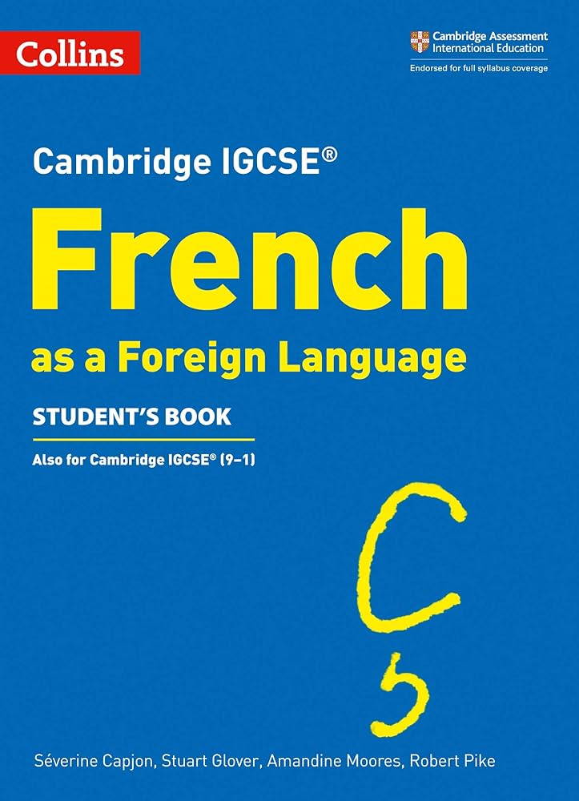
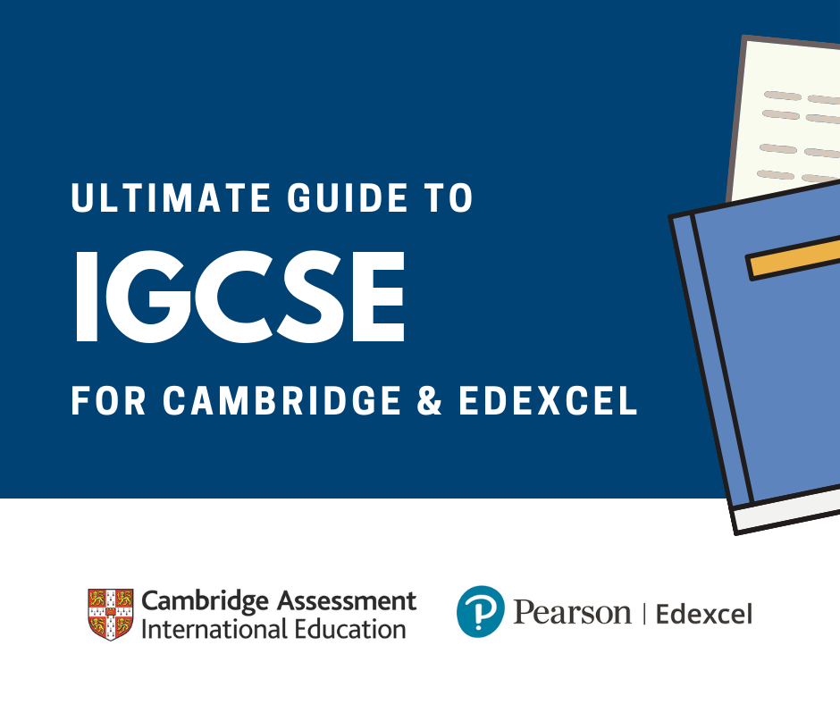

Download Sample Exam Papers
Access sample GCSE exam papers to familiarize yourself with the format and types of questions.
Download Sample Papers
Download Practice Questions

Enhance your exam readiness with downloadable practice questions covering various topics and difficulty levels.
Click the button below to download the PDF material:
Download PDF
A Comprehensive Study Guide for the GCSE French Exam

Should cover various aspects of the curriculum. Here's a suggested study guide:
Vocabulary and Grammar:
- Daily Vocabulary Practice:
Learn a set number of new words and phrases each day.
Use flashcards for effective memorization.
- Grammar Focus:
Review essential grammar rules, including verb conjugations and sentence structures.
Practice with exercises to reinforce grammar concepts.
Listening Comprehension:
- Listen Regularly:
Engage with French audio materials, such as podcasts, music, or news.
Practice understanding different accents and speeds.
- Past Listening Papers:
Practice past listening comprehension papers to familiarize yourself with the format.
Pay attention to question types and develop strategies for effective listening.
Reading Comprehension:
- Diverse Reading Materials:
Read a variety of French texts, including articles, short stories, and news.
Focus on understanding main ideas, details, and inference.
- Practice Papers:
Complete past reading comprehension papers under timed conditions.
Work on summarizing and answering questions efficiently.
Writing Skills:
- Essay Writing Practice:
Practice writing essays on various topics, paying attention to structure and coherence.
Get feedback from teachers or peers.
- Letter and Report Writing:
Familiarize yourself with the format and language used in formal and informal letters, as well as reports.
Practice writing examples of each.
Speaking Skills:
- Daily Speaking Practice:
Engage in regular conversations in French with classmates, language exchange partners, or teachers.
Focus on pronunciation and fluency.
- Role-Playing:
Practice common scenarios that may appear in the oral examination, such as introducing yourself, giving directions, or making a reservation.
Exam Techniques:
- Past Papers:
Work through past exam papers for all sections of the exam.
Analyze marking schemes to understand how answers are assessed.
- Time Management:
Practice time management during study sessions and in simulated exam conditions.
Allocate specific time slots for each section of the exam.
Revision Strategies:
- Review Weak Areas:
Identify weak areas through practice tests and focus on reviewing those topics.
Seek additional resources or guidance for challenging concepts.
- Group Study:
Collaborate with classmates for group study sessions.
Quiz each other on vocabulary, grammar, and practice speaking together.
- Final Review:
Conduct a comprehensive review of all topics in the weeks leading up to the exam.
Use mind maps or summaries to condense information for quick revision.
Additional Tips:
- Stay Healthy:
Ensure adequate sleep, nutrition, and exercise during the exam period.
Manage stress through relaxation techniques.
- Exam Day Preparation:
Familiarize yourself with the exam venue and schedule.
Bring all necessary materials, including pens, pencils, and identification.
By following this study guide, you can systematically cover all aspects of the IGCSE French exam and build confidence in your language skills. Adjust the guide based on your specific needs and focus on continuous improvement.
Effective Revision Strategies
Effectively preparing for the GCSE French exam involves strategic revision to ensure comprehensive coverage of the material. Here are some effective revision strategies:
Organize Content:
Create a revision schedule to cover all topics systematically.
Divide the content into manageable sections, focusing on vocabulary, grammar, listening, reading, and writing.
Use Flashcards:
Create flashcards for key vocabulary, verb conjugations, and essential phrases.
Use one side for the French term and the other for its English translation or definition.
Practice Regularly:
Consistent practice is crucial. Regularly engage in listening, speaking, reading, and writing exercises.
Incorporate French into your daily routine, such as listening to French music, watching videos, or reading articles.
Past Papers:
Practice with past exam papers to familiarize yourself with the exam format.
Analyze the marking schemes to understand how answers are assessed.
Speaking Practice:
Practice speaking French regularly to improve fluency and pronunciation.
Engage in conversations with classmates, language exchange partners, or even practice speaking in front of a mirror.
Grammar Review:
Focus on essential grammar rules and structures.
Identify common errors and work on correcting them.
Listening Skills:
Listen to French podcasts, news, or watch videos to enhance your listening skills.
Practice understanding different accents and speeds.
Reading Comprehension:
Read a variety of texts, including articles, short stories, and news in French.
Summarize, analyze, and answer questions related to the texts.
Writing Practice:
Practice writing essays, letters, and short responses in French.
Pay attention to sentence structure, grammar, and vocabulary.
Seek Feedback:
Request feedback from teachers, classmates, or language tutors.
Address specific areas of improvement based on the feedback received.
Use Online Resources:
Explore online resources, including language learning apps, websites, and interactive exercises.
Utilize online dictionaries and language forums for additional support.
Mind Maps and Summaries:
Create visual aids like mind maps to organize information.
Summarize key points and concepts for each topic.
Remember to tailor these strategies to your learning style and focus on areas that need improvement. Consistent and varied revision techniques will contribute to a well-rounded preparation for the IGCSE French exam.
Time Management Tips
Effective time management is crucial for success in the GCSE French exam. Here are some tips to help you manage your time efficiently during the exam:
Familiarize Yourself with the Exam Format:
Understand the structure of the exam, including the number of papers, sections, and allocated time for each.
Practice Past Papers:
Practice with past exam papers to simulate the exam environment.
Time yourself while completing each section to gauge your pace.
Set Time Limits for Each Section:
Allocate specific time limits for each section based on the total time available and the number of questions.
Stick to these time limits to ensure you cover all sections.
Prioritize Questions:
Start with the sections you find most comfortable to build confidence.
Prioritize questions within each section based on your strengths.
Read Instructions Carefully:
Take a few minutes at the beginning of each section to carefully read the instructions.
Understand what is expected in terms of format, length, and content.
Plan Your Writing:
For writing tasks, spend a few minutes planning your response before you start writing.
Create a brief outline to organize your thoughts.
Manage Reading Time:
In reading comprehension sections, quickly scan the questions before reading the passage.
Mark relevant information as you read to make answering questions more efficient.
Time-Bound Vocabulary and Grammar Revision:
Set specific time slots for revising vocabulary and grammar leading up to the exam.
Use flashcards and targeted exercises for focused practice.
Stay Calm During Listening Tasks:
During listening comprehension tasks, stay calm and focused.
Take brief notes while listening to help you answer questions later.
Review and Proofread:
Allocate the last few minutes of each section to review your answers.
Correct any obvious errors and ensure clarity in written responses.
Skip Difficult Questions:
If you encounter a challenging question, don't spend too much time on it initially.
Move on to the next question and come back to the challenging one if time allows.
Practice Time Management Regularly:
Practice time management during your study sessions to build a sense of timing for different tasks.
Monitor and adjust your approach based on the time you take for practice exercises.
Stay Calm and Focused:
Maintain a calm and focused mindset throughout the exam.
If you find yourself stuck on a question, take a deep breath and move on to the next one.
Remember that effective time management requires both planning and practice. Regularly assess your progress, adjust your strategies, and refine your time management skills to optimize performance during the GCSE French exam.